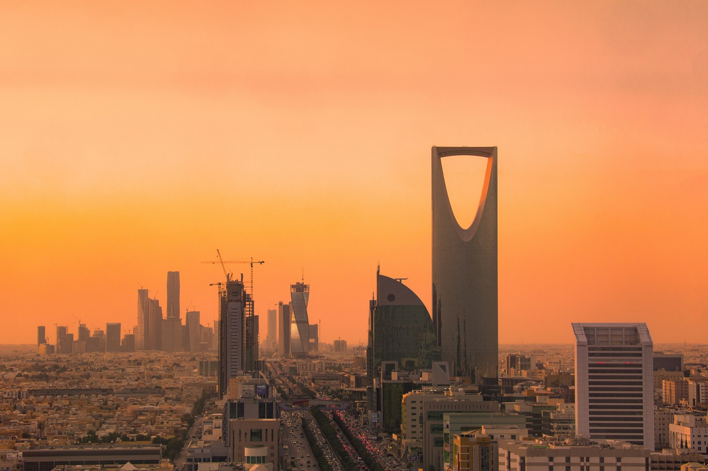

Husiy hujumlari Saudiyaning «Vision 2030» rejalarini sinovga qoʻydi
Uch Saudiya aeroportiga uyushtirilgan husiy hujumlari natijasida 20 dan ortiq kishi halok boʻldi va mamlakatning bosh investitsiya sammiti masofaviy formatga oʻtdi. Bu — Ar-Riyodning 2030-yilgacha $100 mlrd xorijiy investitsiya jalb qilish maqsadiga tahdid. Oʻzbekistonga daxli: saudiyalik ACWA Power energetikamizga $15 mlrddan ortiq sarmoya kiritgan.

Yaman husiylari 2026-yil oktabrida Saudiya Arabistonining uchta xalqaro aeroportiga ketma-ket raketa va dron hujumlarini uyushtirdi. Bu hujumlar faqat odamlar hayotiga emas, mamlakatning iqtisodiy kelajagiga — Ar-Riyod yetti yildan beri qurayotgan «Vision 2030» rejasiga ham zarba bermoqda.
Hujumlar: nima boʻldi
6–12-oktabr kunlari husiylar Ar-Riyoddagi «Xolid», Abhadagi va Dammomdagi «Fahd» xalqaro aeroportlariga ballistik raketa va dron toʻlqinini yoʻlladi. 8-oktabr kuni «Xolid» aeroportida Saudiya aviakompaniyasining Airbus A320 layneri yoʻq qilindi. 10-oktabrdagi zarba eng ogʻiri boʻldi: 13 kishi halok, 308 kishi yarador. Jami 20 dan ortiq kishi halok, 370 dan ortigʻi yarador boʻldi — bu Saudiyadagi 2015-yildagi Qatif va Dammom teraktlaridan beri eng qonli hodisa. Husiylar Dahrondagi «Aramko» obyektiga ham zarba berganini daʼvo qildi.
Investorlar darvozasi yopildi
Ar-Riyoddagi «Xolid» xalqaro aeroporti — xorijiy investorlar, biznes rahbarlari va sayyohlar uchun asosiy darvoza — hujumlardan keyin bir muddat yopib qoʻyildi. Oqibatda Saudiyaning bosh investitsiya sammiti — Future Investment Initiative (26–29-oktabr, Ar-Riyod) — qisman masofaviy (gibrid) formatga oʻtishga majbur boʻldi; baʼzi ishtirokchilar qoʻshni Koʻrfaz davlatlariga qoʻnib, quruqlik orqali kelishi kutildi. Tahlilchilarning fikricha, bunday vaziyat investitsiya qarorlarini kechiktiradi, talab qilinadigan daromadni oshiradi va davlatni resurslarini iqtisodiy islohotdan mudofaa va xavfsizlikka burishga undaydi.

«Vision 2030» nega muhim
2016-yilda eʼlon qilingan «Vision 2030» — Saudiyaning neftga qaramlikdan chiqish rejasi. Uning asosiy maqsadlaridan biri — 2030-yilga borib yillik xorijiy toʻgʻridan-toʻgʻri investitsiyalarni $100 mlrdga (YaIMning taxminan 5,9%iga) yetkazish. Bu amalga oshsa, Saudiya xorijiy investitsiya jalb qilish boʻyicha jahonda AQSh va Xitoydan keyingi uchinchi davlatga aylanadi. Biroq amaldagi koʻrsatkich maqsaddan ancha past; yangilangan xavfsizlik tahdidi esa bu ambitsiyani yanada qiyinlashtiradi.
Oʻzbekistonga daxli bormi
Bor. Saudiyalik ACWA Power — Oʻzbekiston energetikasidagi eng yirik xorijiy investor. Kompaniya mamlakatimizga hozirgacha $15 mlrddan ortiq sarmoya kiritgan, 19 ta energetika loyihasi (18 tasi qayta tiklanuvchi energiya) ustida ishlamoqda va bu raqamni oʻn yil oxirigacha $25 mlrdga yetkazmoqchi. Qoraqalpogʻistonda $3,06 mlrdlik 1,5 GW quvvatli Qoʻngʻirot shamol parki qurilmoqda (2027-yil birinchi choragida ishga tushishi rejalashtirilgan). Yaʼni Saudiya iqtisodidagi beqarorlik oʻzbek loyihalariga ham bilvosita taʼsir qilishi mumkin.
Ikki muqaddas makon
Saudiya qiroli «Ikki muqaddas masjid xizmatchisi» unvonini tashiydi — Makka va Madina shu davlatda joylashgan. Diqqatga sazovori shuki, husiylarning harbiy soʻzlovchisi Yahyo Sareʼ aeroportlar nishon boʻlishini aytganda ham Makka va Madina aeroportlarini bundan istisno qildi. Oʻzbekiston uchun bu bogʻliqlik yaqqol: 2026-yilgi haj mavsumida mamlakatimizdan 15 000 ga yaqin ziyoratchi Saudiyaga bordi, umra esa yil boʻyi davom etadi.
Nega muhim
Saudiya Arabistoni — islom dunyosining maʼnaviy markazi va mintaqaning eng boy iqtisodiyotlaridan biri. Uning muqaddas makonlari, nefti va ulkan investitsiya rejalari oʻzbeklarning ham eʼtiqodiga, ham roʻzgʻoriga daxldor. Shuning uchun Ar-Riyodning xavfsizlik va iqtisodiy sinovi butun mintaqa va musulmon dunyosi uchun ahamiyatlidir.